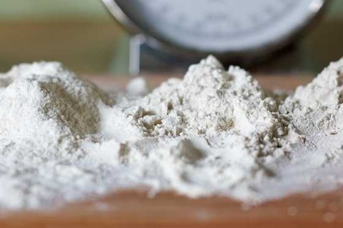
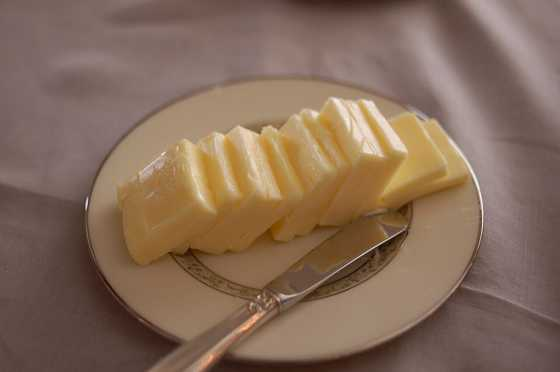
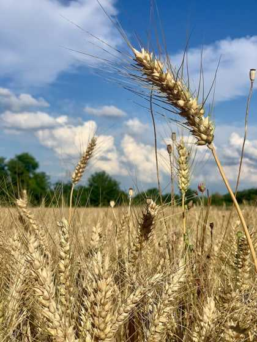
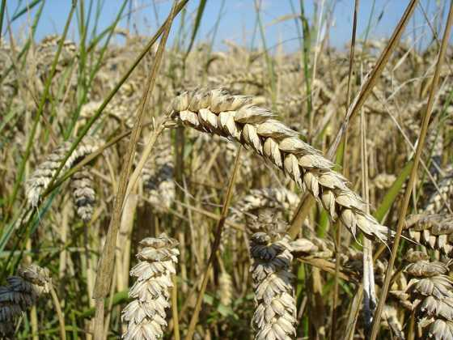

大分県中津市京町のパン屋
素材の味が、こんがり香る。
手づくりのパンをどうぞ。
生地からフィリングまで、ひとつずつ手づくり。添加物に頼らず、素材の味を大切にしたパンのお店です。
お店について
ABOUT
ブラウンは、中津市京町にあるパン屋さんです。紹介記事によると、生地からフィリングまですべて手づくりで、イーストフード・乳化剤・マーガリンを使わず、安心して食べられるパンを目指しているそうです。
営業は週に2日ほど(2021年の別の記事では月に10日ほど)と紹介されており、営業日はInstagramでお知らせされています。ご注文・ご予約はInstagramのDMで受け付けていると紹介されていました。
店名の意味や創業の経緯は確認できていないため記載していません。上記は第三者の紹介記事(時期により変わる可能性があります)に基づきます。最新の情報はInstagramをご確認ください。

パンのある風景
IMAGE




口コミ(イメージ例)
VOICE
以下は制作側が作成したイメージ例で、実在のお客様の声ではありません。
イメージ例
手づくりのパンは素朴であとを引くおいしさ。営業日を調べてから出かけました。
イメージ例
バゲットの香ばしさにほっとしました。次はフォカッチャも買いたいです。
イメージ例
Instagramで予約できるので、ほしいパンを確実に手に入れられて助かります。
写真クレジット
PHOTO CREDITS
写真はすべてフリー素材(Creative Commons等)で、縮小・切り抜きなどの加工をしています。
- images/croissants.jpg(クロワッサンのイメージ): Herry Wibisono (herryway) / CC0 / 撮影地: 不明 / Wikimedia Commons等のフリー素材
- images/basket.jpg(かごに入ったパンのイメージ): Marianne Casamance / CC BY-SA 4.0 / 撮影地: 他地域(France) / Wikimedia Commons等のフリー素材
- images/sourdough.jpg(サワードウのスライスのイメージ): Angel Ganev / CC BY 2.0 / 撮影地: 不明 / Wikimedia Commons等のフリー素材
- images/flour.jpg(小麦粉のイメージ): Mudd1 / CC BY-SA 3.0 / 撮影地: 不明 / Wikimedia Commons等のフリー素材
- images/wheat-sky.jpg(空と麦のイメージ): Daniela M. / CC BY-SA 4.0 / 撮影地: 他地域(Italy) / Wikimedia Commons等のフリー素材
- images/brioche.jpg(ブリオッシュのイメージ): Msayago10 / CC BY-SA 4.0 / 撮影地: 他地域(Brazil) / Wikimedia Commons等のフリー素材
- images/rolls-tray.jpg(ロールパンのトレーのイメージ): Infrogmation / CC BY-SA 4.0 / 撮影地: 他地域(US) / Wikimedia Commons等のフリー素材
- images/sweet-buns.jpg(菓子パンのイメージ): Funknendai / CC0 / 撮影地: 不明 / Wikimedia Commons等のフリー素材
- images/toast-jam.jpg(ジャムを塗ったトーストのイメージ): MOs810 / CC BY-SA 4.0 / 撮影地: 他地域(UK) / Wikimedia Commons等のフリー素材
- images/butter-knife.jpg(バターナイフとパンのイメージ): Carey Tilden / CC BY 2.0 / 撮影地: 不明 / Wikimedia Commons等のフリー素材
- images/wheat-close.jpg(麦の穂のイメージ): User:Bluemoose / CC BY-SA 3.0 / 撮影地: 不明 / Wikimedia Commons等のフリー素材
- images/oatmeal-toast.jpg(トーストのイメージ): Daderot / CC0 / 撮影地: 不明 / Wikimedia Commons等のフリー素材